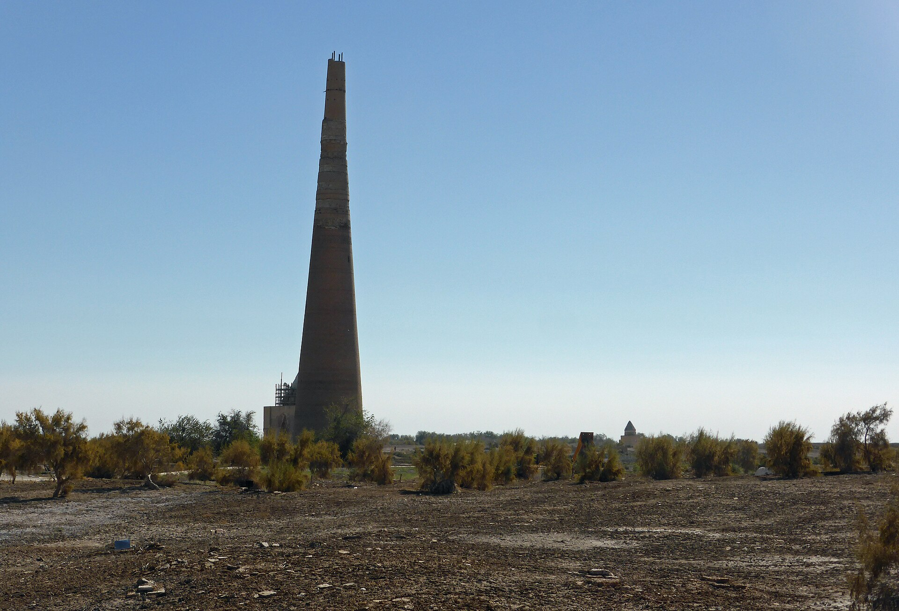

The Uzbek diaspora in Turkmenistan: the historic community of Daşoguz and Lebap
The Uzbeks of Turkmenistan are the country's largest ethnic minority. They live mainly in the northern Daşoguz and eastern Lebap provinces along the Amu Darya, and they are not recent migrants but a historically settled population. This historical reference covers the community's size (about 5–9% by source), its location, its formation from the Khiva and Bukhara khanates to the 1924–25 Soviet border delimitation, and the heritage of Köneürgench — strictly on the basis of verified sources.

The ethnic Uzbeks of Turkmenistan are the country's largest ethnic minority. They are not chance migrants but the settled descendants of the historic oasis communities of the Amu Darya valley. This historical reference covers the community's size, location, and formation strictly on the basis of verified sources — census data, the Minority Rights Group (MRG), UNESCO, and reliable historical sources. Because Turkmenistan does not fully publish its demographic data, figures are given with caution.
The size of the community: what the sources say
The exact share varies by source and year. In the 1995 official census, Uzbeks numbered 408,259 — 9.2% of the population. In the 2012 data (never fully published officially, later leaked) the figure was 5.8%, and in the 2022 official census it was given as 642,476 people — 9.1%. The older baseline of the U.S. CIA World Factbook cites about 5%. The overall conclusion: Uzbeks are Turkmenistan's largest minority, making up roughly 5–9% of the population depending on the source; they moved into the position of largest minority after the post-1991 emigration of Russians.
Where they live
Uzbeks are concentrated in two border provinces. The northern Daşoguz province (formerly Tashauz) borders Uzbekistan's Khorezm Region and Karakalpakstan; according to the 2022 census, Uzbeks there numbered 489,453 — 31.57% of the province's population (and 43.38% of its urban population), making it the heart of the community. The eastern Lebap province (capital Türkmenabat, formerly Chardzhou) runs along the Amu Darya opposite Uzbekistan's Bukhara region and is the second main Uzbek-populated province.

Historical formation: the age of the khanates
These communities are historically a settled oasis population, the legacy of two eras. The first is the age of the khanates: the Uzbek-ruled Khanate of Khiva (Khorezm, 1511–1920) lay along the lower Amu Darya and covered much of present-day northern Turkmenistan; the likewise Uzbek-ruled Emirate of Bukhara (1785–1920) extended along the middle Amu Darya, and Türkmenabat (old Chardzhou) was for centuries a town within it. At that time the modern border did not exist, and the oasis population was a mix of Uzbek and Turkmen communities.
The Soviet border delimitation (1924–25)
The second and decisive factor was the national-territorial delimitation of Central Asia. After Khiva and Bukhara were abolished, the Soviet authorities decided in October 1924 to reorganize the region along ethnic lines, creating the Uzbek SSR and the Turkmen SSR. The Khorezm SSR, successor to Khiva, was dissolved on 17 February 1925 and partitioned among the Uzbek SSR, the Turkmen SSR, and the Karakalpak Oblast. The new borders cut through historically mixed oasis districts and left substantial Uzbek communities inside the Turkmen SSR — the origin of today's minority.
A shared oasis culture
The Uzbeks of Daşoguz and Lebap belong to the settled, irrigation-based oasis culture of the Amu Darya valley and to the historic Khorezm (Khwarazm) region, which straddles the modern border. Türkmenabat (ancient Āmul) sat on Silk Road routes linking Bukhara, Khiva, and Merv. For that reason the customs, farming, and urban traditions of this region's population are closely tied to the Khorezm and Bukhara oases of Uzbekistan.
Language and education: the modern situation
The "Turkmenization" policy under President Saparmurat Niyazov sharply curtailed minority-language education. According to the Minority Rights Group (MRG), Human Rights Watch (its World Reports 2001–2006), and the UN, from around 2000 the state stopped enrolling new students in Uzbek-medium education, and by the end of 2005 most minority-language schools had closed; many Uzbek teachers lost their jobs because they could not teach in Turkmen. These organizations' findings note continued assimilation pressure on minorities in later years.
The heritage of Köneürgench
The clearest material evidence of the community's historical tie to Khorezm is Köneürgench (Kunya-Urgench), located in Daşoguz province on the left bank of the Amu Darya. It was the medieval capital of Khorezm and was inscribed on the UNESCO World Heritage List in 2005. Surviving monuments include the Kutlug-Timur Minaret (about 60 meters, one of the tallest in Central Asia) and the Turabek-Khanum Mausoleum (about 1370) — testimony to the shared Khorezmian-Uzbek cultural history of the region.
Conclusion
The Uzbeks of Turkmenistan are not new migrants but a historic community that has lived settled in the Amu Darya oases since the era of the Khiva and Bukhara khanates and ended up inside the Turkmen SSR as a result of the Soviet border delimitation. Their presence in Daşoguz and Lebap shows how the region's single Khorezm-Bukhara cultural space was divided among several states rather than one.

Sources
- Wikipedia — Demographics of Turkmenistan (1995, 2022 ro'yxat raqamlari; ishonchlilik bahsi)
- Jamestown Foundation — Unpublished Census Provides Rare and Unvarnished Look at Turkmenistan (2012 sizib chiqqan ma'lumotlar)
- Minority Rights Group — Uzbeks in Turkmenistan (eng yirik ozchilik, joylashuv, til bosimi)
- Wikipedia — Daşoguz Region (2022: o'zbeklar 31,57%; chegaralar; Ko'hna Urganch)
- UNESCO World Heritage Centre — Kunya-Urgench (2005 ro'yxatga kiritilishi; Xorazm poytaxti)